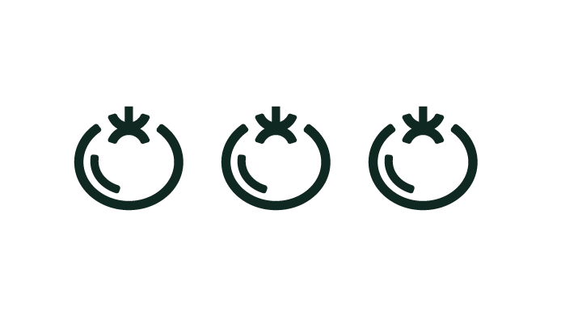

<div class="my-table__actions">
  <div>
    <h2 class="my-table__actions__title nt-title" *ngIf="settings.title">
      {{ settings.title | translate }}
    </h2>
  </div>
  <div>
    <a class="button" *ngIf="settings.addButton" (click)="add()">
      {{ 'my-table.actions.add' | translate }}
      <i class="fas fa-plus"></i>
    </a>
  </div>
</div>

<div class="my-table__searchbar" *ngIf="useSearchBar">
  <span class="my-table__searchbar__icon">
    <i class="fas fa-search"></i>
  </span>
  <input [(ngModel)]="searchBarText" class="my-table__searchbar__input" (keypress)="changeSearch()" type="text" placeholder="..."/>
</div>
<div class="my-table__filters" *ngIf="settings.allowFiltering">
  <label for="new_filter">{{ 'my-table.filter.add_a_filter' | translate }}: </label>
  <select id="new_filter" (change)="addFilter($event.target.value)">
    <option value=""></option>
    <option *ngFor="let filter of filters" value="{{filter.name}}">{{filter.display}}</option>
  </select>
  <div class="my-table__filters__filter" *ngFor="let filter of selectionnedFilters">
    <div>
      {{ filter.display }}
    </div>
    <div>
      <select [(ngModel)]="filter.comparator">
        <option *ngFor="let comparator of filter.comparators" value="{{comparator.name}}">{{comparator.display}}</option>
      </select>
    </div>
    <div>
      <input type="text" [(ngModel)]="filter.value">
    </div>
  </div>
  <div class="my-table__filters__actions" *ngIf="selectionnedFilters.length">
    <button (click)="resetFilters()">
      <i class="fas fa-sync-alt"></i>
      {{ 'my-table.filter.reset' | translate }}
    </button>
    <button (click)="applyFilters()">
      <i class="fas fa-filter"></i>
      {{ 'my-table.filter.execute' | translate }}
    </button>
  </div>
</div>
<table class="my-table__table">
  <tr class="my-table__table__header">
    <th *ngFor="let column of settings.columns" class="my-table__table__header__column">
      {{ column.title | translate }}
    </th>
    <th *ngIf="displayActionColumn()" class="my-table__table__header__column my-table__table__header__column--actions">
      {{ 'my-table.actions' | translate }}
    </th>
  </tr>
  <tr class="my-table__table__no-data" *ngIf="!data || data.length === 0">
    <td [colSpan]="getNumberOfColumns()" class="my-table__table__no-data__cell">
      <span *ngIf="data && data.length === 0">
        {{settings.noDataText | translate }}
      </span>
      
    </td>
  </tr>
  <tr *ngFor="let item of data"
      [ngClass]="{'my-table__table__line--clickable' : settings.clickable}"
      (click)="clickItem($event, item)"
      class="my-table__table__line">
    <td *ngFor="let column of settings.columns"
        class="my-table__table__line__cell">
      <span *ngIf="column.type === 'boolean' && item[column.name] === true">
        <i class="fa fa-check" style="color: green;"></i>
      </span>
      <span *ngIf="column.type === 'boolean' && item[column.name] === false">
        <i class="fa fa-times" style="color: darkred;"></i>
      </span>
      <span *ngIf="column.type !== 'boolean'">
        {{ item[column.name] | translate }}
      </span>
    </td>
    <td class="my-table__table__line__cell my-table__table__line__cell--actions"
        *ngIf="settings.editButton || settings.removeButton">
      <a *ngIf="settings.editButton"
         class="my-table__table__line__cell--actions__edit"
         (click)="edit(item)">
        <i class="fas fa-pencil-alt actionnable"></i>
      </a>
      <a *ngIf="settings.removeButton"
         class="my-table__table__line__cell--actions__remove"
         (click)="remove(item)">
        <i class="fa fa-trash actionnable"></i>
      </a>
    </td>
  </tr>
</table>
<div class="my-table__footer">
  <div class="my-table__footer__pagination">
    <button *ngFor="let page of pagination"
            (click)="goToPage(page.index)"
            class="my-table__footer__pagination__page"
            [disabled]="page.index == null"
            [ngClass]="{'active': page.active, 'disabled': page.index == null}">{{ page.name }}</button>
  </div>
  <div class="my-table__footer__limits" *ngIf="limitChoices">
    <span class="my-table__footer__limits__title">
      {{ 'my-table.objects_by_page' | translate }}:
    </span>
    <a class="my-table__footer__limits__choice" *ngFor="let limit of limitChoices" (click)="changeLimit(limit)">{{limit}}</a>
  </div>
</div>


<app-nt-modal name="{{deleteModalName}}"
              typeModal="danger"
              title="Supprimer ?"
              button2Label="Supprimer"
              (button2)="remove(null, true)"
              maxWidth="600px"
              [autoClose]="true">
  {{ 'my-table.delete_modal.text' | translate }}
</app-nt-modal>
